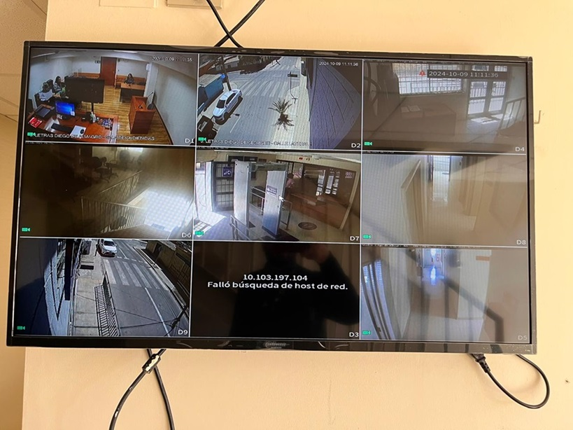

- 09-10-2024
- Informática
- Corporación Administrativa
El pasado 9 de octubre de 2024, un equipo de informáticos de la zonal Copiapó se trasladó hasta el Tribunal de Letras de Diego de Almagro con el objetivo de realizar labores de mantenimiento y reparación. Uno de los principales trabajos realizados fue la reparación de la televisión del sistema de circuito cerrado de televisión (CCTV), que se encontraba quemada y fuera de servicio.

Durante la jornada, los profesionales también atendieron otros requerimientos de los funcionarios del tribunal, brindando soporte técnico y asegurando el correcto funcionamiento de los equipos tecnológicos.
Posteriormente, aprovechando la visita a la ciudad, el equipo acudió al Tribunal de Garantía de Diego de Almagro para continuar con el trabajo, atendiendo las necesidades y solicitudes de los funcionarios de esa institución.
La jornada de mantenimiento y soporte técnico fue exitosa, garantizando que los tribunales de la ciudad continúen funcionando de manera óptima y segura.